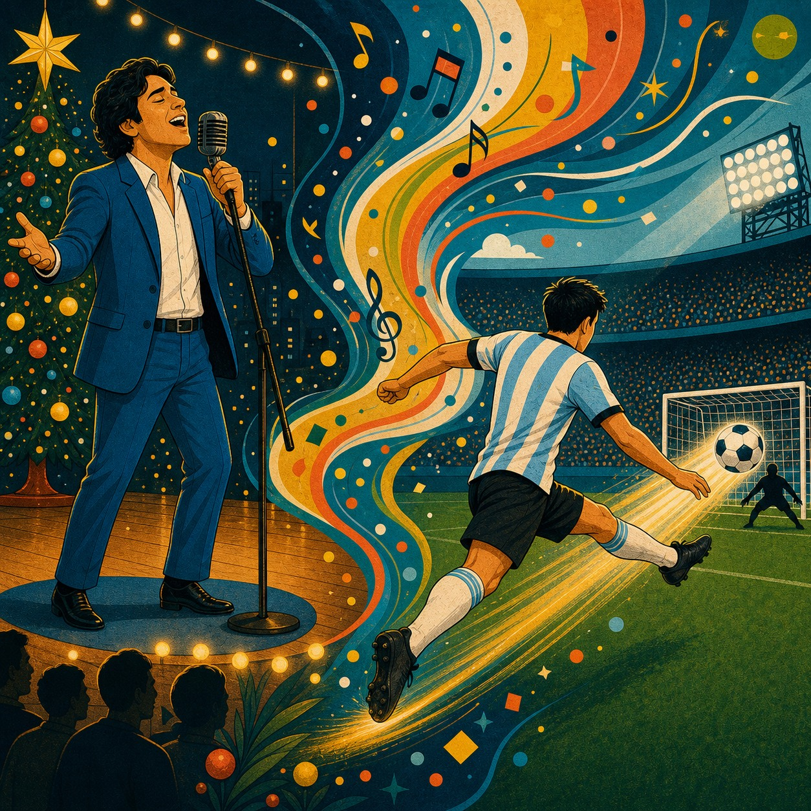
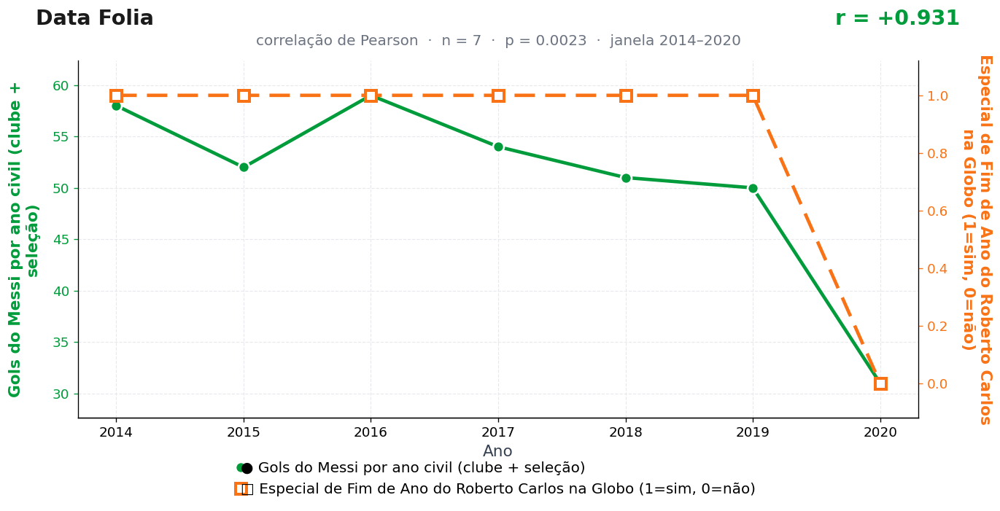

Post de 29/06/2026

A teoria
O especial de fim de ano organiza dezembro como uma grande afinação doméstica. A sala, a família e a televisão entram no mesmo andamento, criando uma trilha de estabilidade emocional.
Messi trabalha justamente nesse intervalo entre ordem e improviso. A música limpa o ruído do mundo, e o campo recebe uma fração de silêncio suficiente para a perna esquerda escolher o canto.
A ligação é rítmica. Roberto Carlos entrega o compasso; Messi traduz o compasso em finalização. Um segura a nota, o outro encontra a rede.
A hipótese alternativa — de que a perna esquerda de Messi simplesmente aprecia "Emoções" — segue em análise no nosso departamento de música e finalização. O parecer preliminar é favorável, mas pede mais dezembros de observação.
A teoria é ficção; a correlação é real: r = 0,93 (n = 7, p = 0,002).
Os dados por trás

- Gols do Messi por ano civil (clube + seleção) — 7 pontos anuais, período 2014–2020. Fonte: RSSSF / IFFHS / Wikipedia.
- Especial de Fim de Ano do Roberto Carlos na Globo (1=sim, 0=não) — 7 pontos anuais, período 2014–2020. Fonte: Globo — programação de fim de ano.
Como as correlações deste site são encontradas — e por que você não deve confiar nelas — está explicado na nossa metodologia.
Por que isso acontece?
A segunda série é binária: o especial do Roberto Carlos aconteceu em todos os anos da janela (valor 1), exceto 2020 (valor 0). Correlacionar qualquer coisa com uma sequência 1,1,1,1,1,1,0 mede uma única pergunta: "2020 foi diferente dos outros anos?". Para os gols de Messi, foi — ele marcou 31, bem abaixo dos 50 e tantos habituais. Um único ano discrepante nas duas séries gera sozinho o r = 0,93.
E aqui existe, de verdade, uma causa comum — só que não é a que a teoria sugere. A pandemia de 2020 parou o futebol por meses (menos jogos, menos gols) e também suspendeu o especial de fim de ano. As duas séries caíram juntas porque o mesmo evento externo derrubou as duas, não porque uma toca a trilha sonora da outra. É o exemplo de livro-texto de variável de confusão.
Com n = 7 e uma série que só tem dois valores possíveis, o p-valor de 0,002 é decorativo: ele pressupõe variação livre que esses dados simplesmente não têm.
Post de 29/06/2026 · publicado também no Instagram @datafolia.